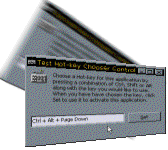

VB HotKey Configuration Sample (35K)
VB HotKey Configuration Sample (35K)
 VB5 Hot Key Sample (21K)
VB5 Hot Key Sample (21K)
 VB6 Hot Key Sample (20K)
VB6 Hot Key Sample (20K)
 Bugs: 2 / 2
Bugs: 2 / 2
 Issues: 0 / 0
Issues: 0 / 0
 Questions: 0 / 0
Questions: 0 / 0
 27 Jan 1999
27 Jan 1999
First Posted
 Subclassing Without The Crashes
Subclassing Without The Crashes

Creating and Responding to System-Wide Hotkeys
Win32 allows you to set up combinations of key-presses which can be associated with an application on a system-wide scope, called Hotkeys. When a user presses a registered HotKey it doesn't matter which application is active when they pressed it, the hot-key message will get routed to your application.
About HotKeys
There are two types of HotKeys:
- Application activation HotKeys
These are the simplest type. When the HotKey is selected your application is activated. They are very simple to set up but they only activate your application - you can't determine if this was caused by the HotKey being pressed rather than some other event, nor decide on any specific action to take. - Registered HotKeys
This type of HotKey sends a WM_HOTKEY message to your application when the HotKey is pressed, so you can choose how to respond to the key. Setting up this type is slightly more complex and you have to subclass your application's form to intercept the HotKey messages.
This article describes how to create and respond to the second type, Registered HotKeys. If you want to create a simple activation HotKey, this information is described in the HotKey Control sample. This also provides an implementation of the Common Controls HotKey control which you can use in an application to make it easier for a user to set-up HotKeys.
Registering a HotKey
Registering a system-wide HotKey is achieved in two steps:
- Creating a globally unique identifier for the HotKey. You do this using the Win32 Global Atom database.
- Registering the HotKey itself.
1. The Win32 Atom Databases
Win32 Atom databases store a list of unique strings which are internally identified by an 16 bit integer ID. The Global Atom database creates string lists which are accessible to all processes. In addition to this each process on the system can have its own Local Atom database. These functions could be quite useful for other VB purposes - if you need to store a list of unique strings and IDs in an application, you could take advantage of the Atom database to do it. However, as there is only one atom database per process you do have to be careful! Note that an applications process includes both the executable and any OCXs or DLLs being used in that executable.
The Global Atom database functions in Win32 are GlobalAddAtom, GlobalDeleteAtom, GlobalFindAtom and GlobalGetAtomName. The first step of registering a HotKey is to create a string that is unlikely to be in use by any other application on the system and then get an ID for it by calling GlobalAddAtom for that string. In the class supplied with the demonstration project the string is created by specifying a local key string to which the executable name and the current GetTickCount value are appended.
2. Registering the HotKey
Registering the key itself is achieved using Win32's unusually sensibly-named RegisterHotKey function. This takes the window handle you want to send the messages to, the globally unique identifier you created using the Global Atom database, a bit flag containing the Shift, Ctrl, Alt or Windows Key keys which have to be pressed for the HotKey and the Virtual Key Code of the key you want to register. Note that in VB the VBRUN library enumeration KeyCodeConstants corresponds directly to the Win32 Virtual Key Code constants. These are the key values that are passed to you in the KeyUp and KeyDown events.
Responding to HotKeys
Once you've set up a HotKey, you can respond to it by subclassing the WM_HOTKEY message sent to the window. The wParam of the WM_HOTKEY message contains the globally unique identifier you assigned to the HotKey, and the lParam contains the virtual key code in the HiWord and the key modifiers in the LoWord.
Tip: Extract HiWords and LoWords from a Long value
This is easy to do using the And operator and emulating a Right Shift by dividing:
LoWord = (Value And &HFFFF&) HiWord = (Value \ &H10000) And &HFFFF&
There is a problem with this techique you have to be aware of if the HiWord of the Value has its highest bit set. In VB, there is no way of defining a Long variable as "Unsigned", so the high bit of a Long is used to identify whether the number is positive or negative. If the Value has the high bit set, then the result of the HiWord comparison above will be wrong (for example, if Value was &HFFFFFFFF, which VB interprets as -1, then the HiWord method above will yield 0!). To work around this problem, rewrite HiWord like this:
' Check for high bit (sign flag):
If (Value And &H80000000) = &H80000000 Then
' Strip it out whilst shifting then add it back in again afterwards:
HiWord = (((Value And &H7FFFFFFF) \ &H10000) Or &H8000) _
And &HFFFF&
Else
' Standard shift method:
HiWord = (Value \ &H10000) And &HFFFF&
End If
In Use
The cRegHotKey class supplied in the download wraps up all of this functionality into a simple class which you can drop into a project. Using the class you do this:
- Declare a WithEvents instance of the class in your project:
Private WithEvents m_cHK As cRegHotKey
- Create an instance of the class and tell it your form's window handle:
Set m_cHK = New cRegHotKey> m_cHK.Attach Me.hwnd
- Add a HotKey (or as many as you like!):
' This registers CTRL-ALT-C as "MyHotKey" m_cHK.RegisterKey "MyHotKey", vbKeyC, MOD_CONTROL Or MOD_ALT
- Respond to the keypress throught HotKeyPress event
Private Sub m_cHK_HotKeyPress(ByVal sName As String, _ ByVal eModifiers As EHKModifiers, _ ByVal eKey As KeyCodeConstants _ ) If (sName = "MyHotKey") Then ' Do your processing here! End If End Sub
The alternative download implements an entirely pointless use of the class: CTRL-ALT-C starts and stops a small earthquake on your system. CTRL-ALT-X used to attempt to kill any instances of the supremely smug Microsoft Assistant thingy it finds on the screen but only works on old versions of Office. More usefully, it also demonstrates using the HotKey control to set up the keys on the screen (this control is included compiled into the source code).